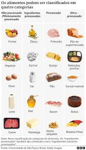
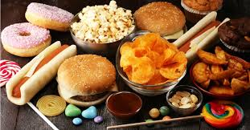
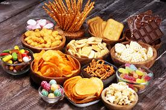

CONHECENDO OS ALIMENTOS:DO NATURAL AOS INDRUSTRIALIZADO
Os alimentos ultraprocessados são produtos industrializados que passam por muitas etapas de fabricação e possuem poucos ou nenhum alimento natural em sua composição. Eles são feitos principalmente com substâncias extraídas de alimentos ou criadas artificialmente pela indústria.
Nesses alimentos, é comum encontrar ingredientes artificiais como: CorantesConservantes
Aromatizantes
Emulsificantes
Realçadores de sabor (como glutamato monossódico)
Adoçantes artificiais
Esses ingredientes são usados para dar sabor, cor, cheiro e aumentar o tempo de validade dos produtos.
Exemplos de alimentos ultraprocessados:Refrigerantes
Salgadinhos de pacote
Macarrão instantâneo
Biscoitos recheados
Nuggets de frango industrializados


